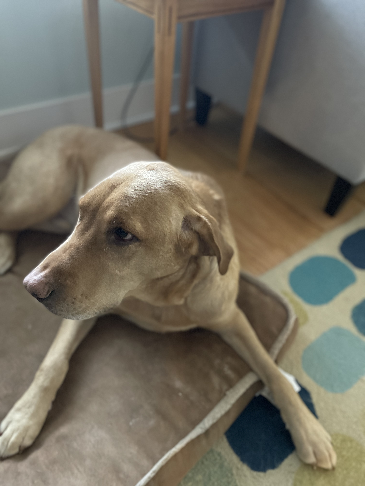

Leo

Leo is a very hyper labradoodle who enjoys running around and meeting new people. Leo recently turned six back in July, and received two toys for his birthday which he has already destroyed.
Leo also enjoys laying around the house, his favorite spots being my parents bedroom and the living room couch.
Leo is a big fan of when the mailman comes because that means he will get a treat.
At bedtime, Leo waits for both of my parents to get into bed before he goes to bed. He thinks he needs to guard them while they are both still awake.
Photo Gallery
Likes
Bacon Q. Dog is a 9yr old labradoodle. He prefers to spend his days lounging among the three different beds/couches that his family has gifted him.
He enjoys a walk or two around the neighborhood, as long as he can pretend that he doesn't see any of the other animals to avoid the embarrassment of not wanting to admit he has no wolf-like skills in chasing them.
At night just as the rest of the family is ready to relax, Bacon suddenly wants to release all of his energy. He will place his toys on a mini couch and frantically drag the couch around, giving his toys "a ride."
There is also a lot of rolling. Lots and lots of rolling.
York

York loves to stay active and go on long walks by his house. He also enjoys chewing on his large assortment of toys.
His favorite toy is his squeaky pig. York’s favorite food is sausage, but cheese is another favorite.
York is a very sociable dog and is a licensed therapy dog. He frequently visits nursing homes and other places in an attempt to raise peoples’ spirits.
When it comes to bedtime, York prefers to sleep alone in his favorite blue dog bed. He will always be the first to get up in the morning.
Photo gallery
Likes
Lincoln

Lincoln is a very intelligent dog. There are times when I don't go pet him and you can see it in his eyes, he is holding a grudge. For the next hour or so he won't come when I call him but will look at me with eyes that say, You did this.
Another example of his intelligence is he is an ace at hide and seek, as well as other games a dog should not be able to play.
Lincoln is not a huge fan of his brother (my other dog), Rainier. When Rainier gets any form of attention, Lincoln will put himself into the scene and bark as if he is being mistreated.
He is not being mistreated, Lincoln is just a wimp.
Photo Gallery
Likes
Cheeto (Chicken)

Cheeto is a cat who likes to eat a lot and play a lot. He has an obsession with his grandpa (human) and tries to get
outside every single day.
If he isn't causing problems, he is usually hiding in a seven foot tall cat tree and
sleeping.
Another name for Cheeto is Chicken, because sometimes he sits very scrunched up and ends up looking like a rotisserie
chicken.
He was nicknamed this by one of his friends, and now he understands it as his own name. He is about six
years old and still acts like a younger cat, despite being middle-aged.
Photo Gallery
Likes
Terry

Terry is a playful and spirited dachshund that loves to play fetch with his bone or tennis ball. He loves wandering in forests and finding large sticks to take home.
His favorite foods are kibble and peanut butter. Terry will run around frantically when it’s time to eat at home.
My family found Terry at a shelter and decided to adopt it. He was 4 months old and is now 8 years old.
Terry knows how to swim, but we don’t tend to go often. Terry got poison ivy once; however, he quickly recovered and has been doing great since.
Photo Gallery
Likes
Jingle

Jingle loves going outside. He used to be an outdoor/indoor cat until we realized that he loved to get injured.
Now, we take him on walks with a leash which he loves! Every time he sees me carrying the leash he goes crazy and meows to go out.
Jingle is very mischievous, he has gotten into many different accidents. His first accident was outside; a bee stung his paw and he cried all night long.
The second one was ALSO outside, he got stuck on a tree for four days. Finally, he came back home one day with his tail bleeding and ripped out.
Photo Gallery
Likes
- Going on walks
- Being pet
- Eating treats